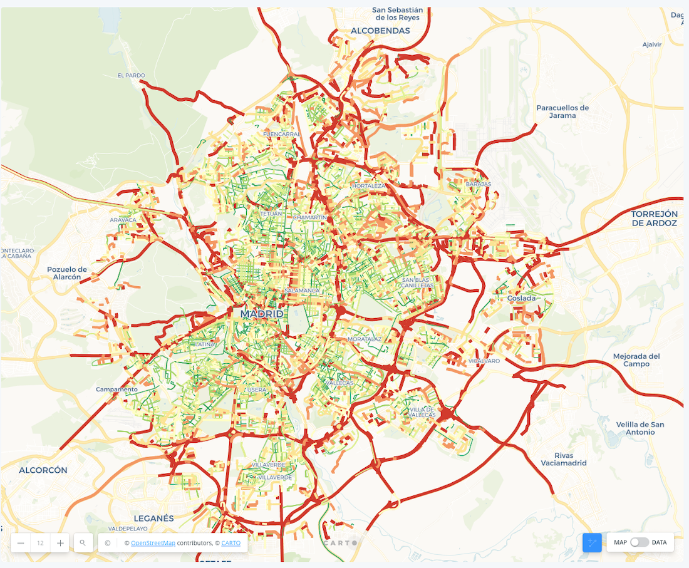

🚦 Predicción de Accidentes de Tránsito
Autores: Calfín & Fernández
🎯 Objetivo
Analizar las condiciones del entorno urbano y vehicular para predecir la cantidad de accidentes de tránsito usando modelos de minería de datos, y comunicar visualmente los hallazgos a partir de datos reales.
🔍 Insights Principales
1. Densidad de tráfico y multas: combinación crítica
A mayor densidad y mayor cantidad de multas, el riesgo de accidentes predichos aumenta significativamente.
2. Lluvia + mal pavimento = más accidentes
Las zonas con pavimento deteriorado y lluvia intensa presentan mayores niveles de accidentes predichos.
3. Variables más influyentes
Según el árbol de regresión, las variables con mayor impacto fueron:
Densidad del tráfico o "traffic_density" , Multas de tráfico o "traffic_fine_amount", Intensidad de la lluvia o "rain_intensity" y la cantidad de vehículos o "vehicle_count".
🧠 Modelo Aplicado
Se utilizó un árbol de regresión (`DecisionTreeRegressor`) con ajuste de hiperparámetros mediante `GridSearchCV`. Se aplicó escalamiento previo de los datos con `StandardScaler`.

📊 Visualizaciones
-
Nube de palabras con variables más importantes

-
Gráfico de dispersión: Pavimento vs Accidentes

📌 Aplicaciones reales
Este modelo de predicción es una herramienta estratégica para **organismos públicos y municipales**, diseñada para generar un impacto directo en la seguridad vial. Permite:
- **Focalizar recursos** en áreas y momentos de mayor riesgo predicho.
- **Mejorar la fiscalización** y la presencia preventiva donde más se necesita.

- **Reducir significativamente la ocurrencia de accidentes** al identificar y mitigar condiciones críticas del entorno urbano y vehicular.

Su implementación se traduce en ciudades más seguras y una gestión más eficiente de la infraestructura vial.
🔗 Enlaces útiles
Publicación en LinkedIn Belen Calfín: Ir
Publicación en LinkedIn Diego Fernández: Ir
Repositorio del código: Ir